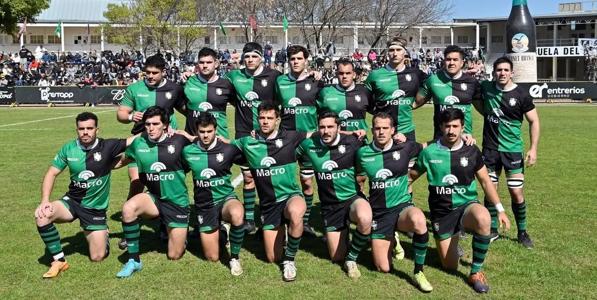

Duendes fue fundado el 5 de Enero de 1957 y se registró el 11 de abril del mismo año en la Unión de Rugby de Rosario. Después de sólo una temporada el club ganó la promoción al nivel superior del sistema de encaje de la liga y ganó su primer título en 1960.
Junto con Atlético del Rosario (Plaza Jewell), Gimnasia y Esgrima de Rosario, y Jockey Club, es uno de los mejores clubes de Rosario, que ganó el torneo regional 15 veces. [cita requerida] En cuatro ocasiones (1968, 1969, 1972, 1993) el club se mantuvo invicto durante toda la temporada.
A la hora de hablar de los orígenes de Duendes salen a la luz varias aristas. Una de las más fundadas dice que la institución es una escisión de Jockey Club y de Universitario; otra, quizás algo más romántica pero no por ello menos cierta, tiene que ver con la amistad de un grupo de jóvenes que decide dejar los clubes donde estaban jugando para armar uno nuevo. De hecho, dentro de los fundadores del club hay varias parejas de hermanos.
El verde y el negro fueron elegidos por votación y en las camisetas se utilizó el damero porque estaba de moda, destacándose la figura del Fantasma Benito dibujado por Lino Palacios del lado del corazón.
Tres años después de su afiliación a la URR, en 1960, Duendes cosechó su primer título local y a partir de entonces comenzó con una seguidilla de títulos. Así, empezó a hacerse conocer en el país.
La década del 60 fue tan prodiga en títulos que podría decirse que fueron sus años dorados. Integraron esos planteles José Luis Imhoff, Juan Benzi y Eduardo España, jugadores a los que la historia les tenía reservado un lugar de privilegio: formar parte de Los Pumas ‘65, aquel mítico equipo que fue una bisagra en el rugby argentino. Tras ellos vistieron la albiceleste muchísimos hombres más surgidos del club, que también dejaron bien parado el honor del rugby rosarino. Ellos fueron Camilo Boffelli, Leandro Bouza, Mario Bouza, Pablo Bouza, Marcelo Carmona, Hugo Céspedes, Miguel Chesta, Javier Escalante, Gonzalo García, Juan Mangiamelli (padre), Maximiliano Nannini, Raúl Pérez y Carlos Promanzio.
En 1992 empezó a insinuar su poderío al ganó el Nacional de Clubes, que organizaba Tucumán Lawn Tennis, y lo reafirmó en 1993 cuando se reencontró con el título local.
A partir de ahí, los verdinegros no sólo continuaron siendo grandes animadores de los torneos locales y de las competencias nacionales, sino que varias veces coquetearon con la gloria. Sus vitrinas dan fe de ello. En juveniles ganó tres veces el Veco Villegas (1989, 1995 y 2002) y en primera se adjudicó la Copa Quesada (1986) y la Copa Federal de Clubes (1996 y 1997), entre otros torneos.
En el Regional del Litoral se coronó en 2000, 2002, 2006 y reverdeció sus laureles en 2007, oportunidad en la que venció en la final a Jockey.
También fue campeón del Torneo del Interior en 2003 y completó su firmamento con la obtención del Nacional de Clubes en 2004, una estrella que lo signó como mejor equipo de la Argentina.
